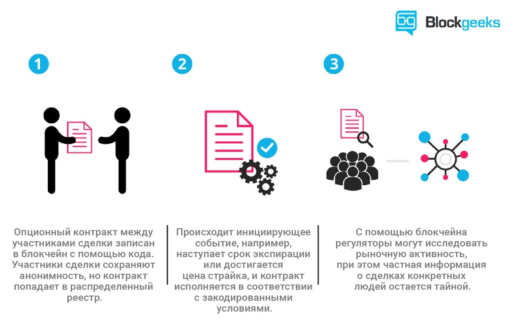

Cмарт-контракты, где можно их применять и при чём тут блокчейн
Реальное практическое применение смарт-контрактам нашлось с появлением технологии блокчейн. Децентрализованные системы на основе блокчейна — та среда, в которой выполнение смарт-контракта не зависит от третьего лица, а его код нельзя произвольно изменить. Вне такой среды смарт-контракт будет просто программным кодом.
Важный параметр смарт-контракта на блокчейне — полнота по Тьюрингу. Простыми словами, полнота по Тьюрингу — это возможность системы выполнить любую вычислимую функцию. То есть Тьюринг-полной будет система, которая может выполнить любую компьютерную программу.
Блокчейн Ethereum работает со смарт-контрактами на Тьюринг-полном языке программирования Solidity. Solidity позволяет создавать более сложные алгоритмы, но такие смарт-контракты гораздо сложнее проверить на наличие уязвимостей.
Где можно применять смарт-контракты?
Цепочки поставок
Смарт-контракты и блокчейн — актуальное решение для обслуживания цепочки поставок от сырья до готовых продуктов. Чаще всего сопроводительная информация для каждого из этапов хранится в отдельных базах данных, а бумажные документы до сих пор приходится пересылать физически. Чтобы собрать один ноутбук, кому-то нужно добыть нефть и металлы, из которых кто-то сделает пластиковый гранулят и нужные сплавы, которые впоследствии превратятся в детали и попадут в сборочный цех. На каждом из этапов нужно передавать и подписывать документы, высылать счета, переводить деньги и т. д. Всю эту информацию можно объединить в одном реестре, чтобы всем сторонам были доступны документы, история транзакций и поставок. Смарт-контракты позволят автоматически распределять платежи после согласования и получения нужных цифровых подписей. Кроме того, в цепочку поставок на блокчейне значительно проще добавлять новых участников вроде поставщиков и перевозчиков.
Продажа интернет вещей
В интернете вещей (Internet of Things, IoT) безопасность и неизменяемость блокчейн-реестра вместе с возможностями смарт-контрактов позволят наладить прозрачные механизмы взаимодействия и обмена ценностями между гаджетами вроде умных холодильников, смартфонов, термостатов и автомобилей. Умный электромобиль может одной транзакцией инициировать оплату за электричество и смарт-контракт активирует зарядное устройство. Права владения этими гаджетами тоже можно фиксировать в блокчейне, а значит, пользователь сможет продать или подарить устройство не покидая блокчейн-сети и без привлечения третьих лиц.

Проблемы смарт-контрактов
Одна из основных технических преград полномасштабному внедрению блокчейн-реестра и смарт-контрактов — необходимость создать эффективные и надёжные оракулы. Оракулы — это внешние агенты, которые отвечают за достоверность предоставленной информации извне.
Блокчейн-реестр — изолированная среда, внутри которой с помощью криптографических доказательств и протоколов консенсуса все участники могут проверить истинность тех или иных данных. Но для широкого применения этим системам нужно получать информацию из внешнего мира: подтверждать факт получения товара, идентифицировать участников, получать биржевые сводки и так далее. Такая информация поступает в систему через оракулы.
Оракулами могут быть:
- измерительные приборы вроде термометра или датчика освещенности;
- конкретные участники сети, которые оказывают услуги блокчейн-системе;
- децентрализованные системы с собственными механизмами консенсуса, построенные поверх основного реестра.
Уже сейчас многие традиционные банки и ведомства экспериментируют с блокчейн-технологиями и смарт-контрактами и инвестируют в проекты в этой отрасли. По мере того, как проекты вроде Augur, Aeternity и Oraclize решают проблему оракулов и совершенствуют технологию, всё больше государственных структур и бизнесов будут внедрять распределённый реестр и смарт-контракты для оптимизации своей работы и прозрачного учёта.
Смарт-контракты уже сейчас могут заменить значительную часть существующего документооборота. Любые типовые соглашения о страховании или передаче имущества можно реализовать как смарт-контракты. Однако для нестандартных случаев традиционные контракты останутся основным элементом соглашения. В роли базиса для распределённых приложений и аналога обычной компьютерной программы для распределённой среды смарт-контракты скорее всего будут использоваться практически повсеместно.